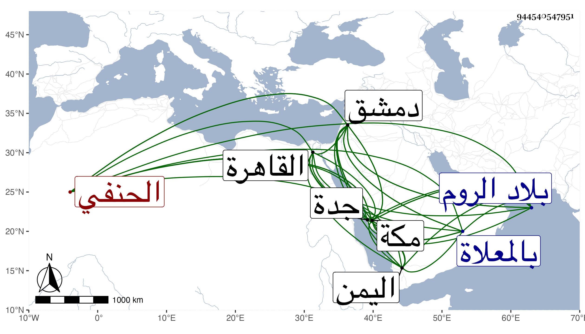

0902Sakhawi.DawLamic.ITO20230111-ara1.EIS1600.944540547951
Biography ID: 944540547951
387
محمد الكمال أبو البركات الحنفي أخو اللذين قبله وشقيق ثانيهما . ولد في سنة خمس وثمانين وسبعمائة أو التي بعدها بمكة وأحضر على الجمال الأميوطي وسمع من أبيه والشمس بن سكر وابن طولوبغا وابن عمه المحب أبي لبركات أحمد بن الكمال النويري ، ودخل القاهرة ودمشق مرارا وسمع بدمشق من عبد القادر الأرموي موافقات زينب ابنة الكمال وكذا دخل الروم واليمن للاسترزاق وأجاز له العفيف النشاوري والصدر الياسوفي وابو الهول الجزري وعمر بن أحمد الجرهمي وابن حاتم والصردي وأبو هريرة بن الذهبي وجماعة ، وحدث باليسير روى عنه النجم ابن فهد واستجازه لي غير مرة ، وناب في حسبة مكة وكذا في القضاء بجدة عن ابن أخيه القاضي أبي اليمن . وكان خيرا ساكنا منجمعا عن الناس مديما للتلاوة وللإقامة بمنزله . مات في المحرم سنة اثنتين وخمسين بمكة ودفن عند سلفه بالمعلاة رحمه الله .
